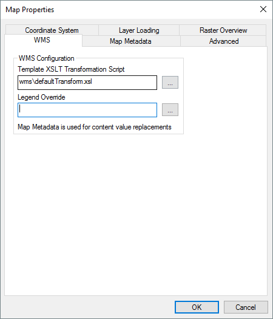

Output maps can be made available to remote users through the MapLink Pro Web Map Server (WMS). This supports open standard OGC WMS 1.0, 1.1.1 and 1.3.0 interfaces to provide raster images of specified areas of the map. Adding a map to the server needs an XML configuration file that contains additional metadata used by the service. MapLink Pro Studio will automatically generate this configuration alongside the output "<MAPNAME>.map" file as "<MAPNAME>_wms.xml". The contents of the file are constructed by processing a values XML file, using a Template XSLT transformation script.
Whilst the default settings should be reasonable for most situations, this panel allows you to provide specific overrides for the automatic generation. Relative paths in any of these settings are deemed to be relative to the MapLink Pro installed "config" folder. The available overrides are:
The contents of the values XML file are defined by the Map Metadata Configuration panel, which contains further information should you want to use your own processing.